컴퓨터활용능력-2급 (2016-10-22 기출문제)
1과목: 컴퓨터 일반
1. 다음 중 멀티미디어에 대한 설명으로 옳지 않은 것은?
- 멀티미디어 데이터는 다양한 하드웨어 및 소프트웨어 환경에서 생성, 처리, 전송, 이용 되므로 상호 호환되기 위한 표준이 필요하다.
- 정보사회의 멀티미디어는 텍스트, 이미지, 사운드, 애니메이션, 동영상 등을 아날로그화 시킨 복합 구성 매체이다.
- 가상현실, 전자출판, 화상 회의, 방송, 교육, 의료 등 사회 전 분야에 응용 가능하다.
- 사용자는 정보 제공자와의 상호작용을 통해 어떤 정보를 언제 어떠한 형태로 얻을 것인지 결정하여 데이터를 전달 받을 수도 있다.
(정답률: 85%)
2. 다음 중 소프트웨어에 대한 설명으로 옳지 않은 것은?
- 소프트웨어란 컴퓨터를 이용하기 위해 필요한 일련의 명령어들의 집합이다.
- 오라클과 같은 데이터베이스 관리 시스템은 응용 소프트웨어에 해당된다.
- 시스템 소프트웨어는 응용소프트웨어가 실행될 때 컴퓨터 하드웨어를 효율적으로 사용하도록 인터페이스 역할을 한다.
- 시스템 소프트웨어는 기능에 따라 제어 프로그램과 번역 프로그램으로 구분한다.
(정답률: 65%)

3. 다음 중 인터넷에서 사용하는 IPv6 주소체계에 대한 설명으로 옳지 않은 것은?
- 16비트씩 8부분으로 총 128비트로 구성 된다.
- 각 부분은 16진수로 표현하고, 세미콜론(;)으로 구분한다.
- 유니캐스트, 멀티캐스트, 애니캐스트 등의 3가지 주소 체계로 나누어진다.
- IPv4의 주소 부족 문제를 해결해 줄 수 있다.
(정답률: 73%)
4. 다음 중 정보 사회의 문제점으로 옳지 않은 것은?
- 정보 기술을 이용한 컴퓨터 범죄가 증가할 수 있다.
- VDT 증후군 같은 컴퓨터 관련 직업병이 발생할 수 있다.
- 정보의 편중으로 계층 간의 정보차이가 감소할 수 있다.
- 정보처리 기술로 인간관계의 유대감이 약화될 가능성도 있다.
(정답률: 88%)
5. 다음 중 정당한 사용자가 정상적으로 시스템을 종료하지 않고 자리를 떠났을 때 비인가된 사용자가 바로 그 자리에서 계속 작업을 수행하여 불법적 접근을 행하는 범죄 행위에 해당하는 것은?
- 스패밍(Spamming)
- 스푸핑(Spoofing)
- 스니핑(Sniffing)
- 피기배킹(Piggybacking)
(정답률: 65%)
6. 다음 중 중앙의 주 컴퓨터에 이상이 발생하면 시스템 전체의 기능이 마비되는 통신망 형태는?
- 버스(Bus)형
- 트리(Tree)형
- 성(Star)형
- 메시(Mesh)형
(정답률: 69%)
7. 다음 중 인터넷 환경에서 파일을 송수신 할 때 사용되는 원격 파일 전송 프로토콜로 옳은 것은?
- DHCP
- HTTP
- FTP
- TCP
(정답률: 63%)
8. 다음 중 네트워크 구성에 대한 설명과 해당 프로토콜이 바르게 연결된 것은?
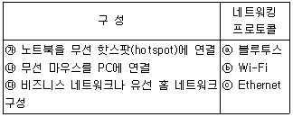
- ㉮-ⓑ, ㉯-ⓒ, ㉰-ⓐ
- ㉮-ⓒ, ㉯-ⓐ, ㉰-ⓑ
- ㉮-ⓑ, ㉯-ⓐ, ㉰-ⓒ
- ㉮-ⓐ, ㉯-ⓑ, ㉰-ⓒ
(정답률: 83%)
9. 다음 중 컴퓨터에서 사용하는 자료 표현 형식에 관한 설명으로 옳지 않은 것은?
- 비트(Bit)는 자료 표현의 최소 단위이며, 8Bit가 모여 니블(Nibble)이 된다.
- 워드(Word)는 바이트 모임으로 하프 워드, 풀 워드, 더블 워드로 분류된다.
- 필드(Field)는 자료 처리의 최소 단위이며, 여러 개의 필드가 모여 레코드(Record)가 된다.
- 데이터베이스(Database)는 레코드 모임인 파일(File)들의 집합을 말한다.
(정답률: 74%)
10. 다음 중 Windows 7의 라이브러리 기능에 대한 설명으로 옳은 것은?(윈도우 10 검증 완료)
- 시작 메뉴의 검색 입력상자가 포함되어 프로그램이나 문서, 그림 등 파일을 신속하게 검색할 수 있다.
- 폴더와 달리 실제로 항목을 저장하지 않고 여러 위치에 저장된 파일 및 폴더의 모음을 표시함으로써 보다 신속 하고 편리하게 파일을 관리할 수 있도록 한다.
- 작업표시줄 프로그램 단추에 마우스 오른쪽 단추를 클릭하면 최근 작업한 프로그램 내용을 보여준다.
- 자녀들이 컴퓨터를 사용하는 시간 뿐만 아니라 프로그램 사용여부 등을 제한하여 안전한 컴퓨터 사용을 유도한다.
(정답률: 56%)
11. 다음 중 운영체제의 성능을 평가하는 항목에 대한 설명으로 옳지 않은 것은?
- 시스템이 일정한 시간 내에 일을 처리하는 능력
- 주어진 문제를 정확하게 처리하는 신뢰할 수 있는 정도
- 처리할 데이터를 일정시간 동안 모아 일괄 처리할 수 있는 능력
- 시스템의 즉시 사용 가능한 정도
(정답률: 64%)
12. 다음 중 Windows 7의 인쇄 기능에 대한 설명으로 옳지 않은 것은?(윈도우 10 검증 완료)
- 기본 프린터란 인쇄 시 특정 프린터를 지정하지 않아도 자동으로 인쇄되는 프린터를 말한다.
- 프린터 속성 창에서 공급용지의 종류, 공유, 포트 등을 설정할 수 있다.
- 인쇄 대기 중인 작업은 취소시킬 수 있다.
- 인쇄 중인 작업은 취소할 수는 없으나 잠시 중단시킬 수 있다.
(정답률: 75%)
13. 다음 중 컴퓨터 소프트웨어 배포와 관련하여 셰어웨어(Shareware)에 관한 설명으로 옳은 것은?
- 특정 기능 또는 기간을 제한하여 공개하고, 사용한 후에 사용자의 구매를 유도하는 소프트웨어이다.
- 개발 회사의 1차 테스트 버전으로 제작 회사 내에서 테스트할 목적으로 배포하는 소프트웨어이다.
- 정식 버전이 나오기 전에 프로그램에 대해 일반인에게 테스트할 목적으로 공개하는 소프트웨어이다.
- 사용기간 및 기능에 제한 없이 무료로 사용할 수 있는 공개용 소프트웨어이다.
(정답률: 77%)
14. 다음 중 애니메이션에서의 모핑(morphing) 기법에 대한 설명으로 옳은 것은?
- 종이에 그린 그림을 셀룰로이드에 그대로 옮긴 뒤 채색 하고 촬영하는 기법이다.
- 2개의 이미지나 3차원 모델 간에 부드럽게 연결하여 서서히 변하는 모습을 보여주는 기법이다.
- 키 프레임을 이용하여 애니메이션을 만드는 기법이다.
- 점토를 사용하여 애니메이션을 만드는 기법이다.
(정답률: 82%)
15. 다음 중 Windows 7의 [보조프로그램]-[시스템 도구]-[시스템 정보]에서 확인 가능한 각 범주에 대한 설명으로 옳지 않은 것은?(윈도우 10 검증 완료)(윈도우 10에서는 [Windows 관리도구]-[시스템 정보])
- 시스템 요약: 컴퓨터 이름 및 제조업체, 컴퓨터에서 사용하는 BIOS 유형, 설치된 메모리 용량 등 컴퓨터 및 운영 체제에 대한 일반 정보가 표시된다.
- 하드웨어 리소스: 컴퓨터 하드웨어에 대한 IT 전문가용 고급 정보가 표시된다.
- 구성 요소: CPU와 저장장치를 제외한 입출력 장치의 구성에 대한 정보가 표시된다.
- 소프트웨어 환경: 드라이버, 네트워크 연결 및 기타 프로그램 관련 정보가 표시된다.
(정답률: 51%)
16. 다음 중 USB 인터페이스에 대한 설명으로 옳지 않은 것은?
- 직렬포트보다 USB 포트의 데이터 전송 속도가 더 빠르다.
- USB는 컨트롤러 당 최대 127개까지 포트의 확장이 가능하다.
- 핫 플러그인(Hot Plug In)과 플러그 앤 플레이(Plug & Play)를 지원한다.
- USB 커넥터를 색상으로 구분하는 경우 USB 3.0은 빨간색, USB 2.0은 파란색을 사용한다.
(정답률: 84%)
17. 다음 중 컴퓨터의 CPU에 있는 레지스터(register)에 관한 설명으로 옳지 않은 것은?
- 계산 결과의 임시 저장, 주소색인 등 여러 가지 목적으로 사용될 수 있는 레지스터들을 범용 레지스터라고 한다.
- 주기억장치보다 저장 용량이 적고 속도가 느리다.
- ALU(산술/논리장치)에서 연산된 자료를 일시적으로 저장한다.
- 프로그램 카운터는 다음에 수행할 명령어의 주소를 저장하는 레지스터이다.
(정답률: 74%)
18. 다음 중 Windows 7의 디스크 포맷에 관한 설명으로 적절하지 않은 것은?(윈도우 10 검증 완료)
- 하드 디스크의 트랙 및 섹터를 초기화하는 작업이다.
- 포맷 요소 중 파일 시스템은 문자 파일, 영상 파일, 데이터 파일 등을 관리하기 위한 기능이다.
- 포맷을 실행하면 디스크의 모든 데이터가 지워진다.
- 빠른 포맷은 하드 디스크에 새 파일 테이블을 만들지만 디스크를 완전히 덮어쓰거나 지우지 않는 포맷 옵션이다.
(정답률: 43%)
19. 다음 중 Windows 7에서 하드디스크의 파일을 삭제할 경우 시스템에 영향을 미칠 수 있는 파일로 주의해야 하는 파일 확장자에 해당하지 않는 것은?(윈도우 10 검증 완료)
- .exe
- .ini
- .sys
- .tmp
(정답률: 54%)
20. 다음 중 모니터의 전원은 정상적으로 들어와 있음에도 화면이 하얗게 나오는 백화현상의 원인으로 가장 적절한 것은?
- 전원 코드의 문제
- 그래픽 카드 드라이버 문제
- 모니터 해상도의 문제
- 모니터의 액정 패널이나 보드상의 문제
(정답률: 72%)
2과목: 스프레드시트 일반
21. 다음 중 정렬 기능에 대한 설명으로 옳지 않은 것은?
- 머리글의 값이 정렬 작업에 포함되거나 제외되도록 설정할 수 있다.
- 날짜가 입력된 필드의 정렬에서 내림차순을 선택하면 이전 날짜에서 최근 날짜 순서로 정렬할 수 있다.
- 사용자 지정 목록을 사용하여 사용자가 정의한 순서대로 정렬할 수 있다.
- 셀 범위나 표 열의 서식을 직접 또는 조건부 서식으로 설정한 경우 셀 색 또는 글꼴 색을 기준으로 정렬할 수 있다.
(정답률: 67%)
22. 다음 중 [D9] 셀에서 사과나무의 평균 수확량을 구하고자 하는 경우 나머지 셋과 다른 결과를 표시하는 수식은?
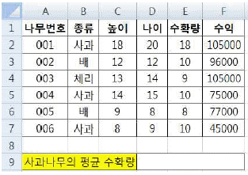
- =INT(DAVERAGE(A1:F7,5,B1:B2))
- =TRUNC(DAVERAGE(A1:F7,5,B1:B2))
- =ROUND(DAVERAGE(A1:F7,5,B1:B2),0)
- =ROUNDDOWN(DAVERAGE(A1:F7,5,B1:B2),0)
(정답률: 63%)
23. 다음 중 [삽입] 탭의 [일러스트레이션] 그룹에서 삽입 가능한 개체에 해당하지 않는 것은?
- 도형
- 클립아트
- WordArt
- SmartArt
(정답률: 57%)
24. 다음 중 근무기간이 15년 이상이면서 나이가 50세 이상인 직원의 데이터를 조회하기 위한 고급필터의 조건으로 옳은 것은?
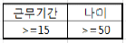
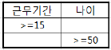
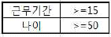
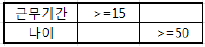
(정답률: 80%)
25. 다음 중 [A2:C9] 영역에 아래와 같은 규칙의 조건부 서식을 적용하는 경우 지정된 서식이 적용되는 셀의 개수는?
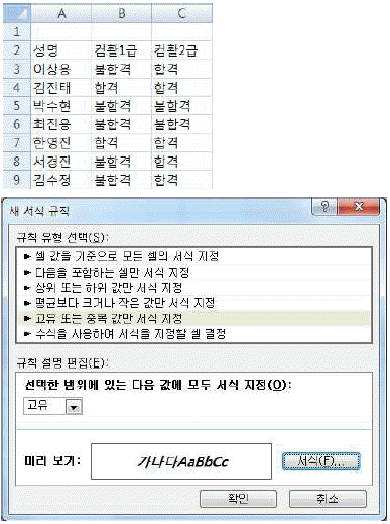
- 3개
- 10개
- 14개
- 24개
(정답률: 57%)
26. 다음 중 [찾기 및 바꾸기] 대화상자에서 설정 가능한 기능으로 옳지 않은 것은?
- 대/소문자를 구분하여 찾을 수 있다.
- 수식이나 값을 찾을 수 있지만, 메모 안의 텍스트는 찾을 수 없다.
- 이전 항목을 찾으려면 <Shift>키를 누른 상태에서 [다음 찾기] 단추를 클릭한다.
- 와일드카드 문자인 ‘*’ 기호를 이용하여 특정 글자로 시작하는 텍스트를 찾을 수 있다.
(정답률: 65%)
27. 다음 중 매크로의 바로 가기 키에 대한 설명으로 옳지 않은 것은?
- 바로 가기 키는 수정할 수 있다.
- 기본적으로 <Ctrl>키와 조합하여 사용하지만 대문자로 지정하면 <Shift>키가 자동으로 덧붙는다.
- 바로 가기 키의 조합 문자는 영문자만 가능하고, 바로가기 키를 설정하지 않아도 매크로를 생성할 수 있다.
- 엑셀에서 기본적으로 지정되어 있는 바로 가기 키는 매크로의 바로 가기 키로 지정할 수 없다.
(정답률: 67%)
28. 다음 중 차트에서 계열의 순서를 변경할 때 선택해야 할 바로 가기 메뉴는?
- 차트 이동
- 데이터 선택
- 차트 영역 서식
- 그림 영역 서식
(정답률: 56%)
29. 다음 중 아래 그림과 같이 [A2:D5] 영역을 선택하여 이름을 정의한 경우에 대한 설명으로 옳지 않은 것은?
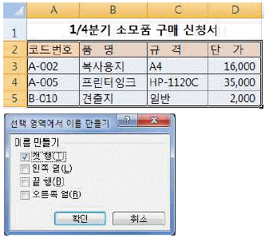
- 정의된 이름은 모든 시트에서 사용할 수 있으며, 이름 정의 후 참조 대상을 편집할 수도 있다.
- 현재 통합문서에 이미 사용 중인 이름이 있는 경우 기존 정의를 바꿀 것인지 묻는 메시지 창이 표시된다.
- 워크시트의 이름 상자에서 ‘코드번호’를 선택하면 [A3:A5] 영역이 선택된다.
- [B3:B5] 영역을 선택하면 워크시트의 이름 상자에 ‘품명’이라는 이름이 표시된다.
(정답률: 49%)
30. 다음 중 차트에 대한 설명으로 옳지 않은 것은?
- 기본적으로 워크시트의 행과 열에서 숨겨진 데이터는 차트에 표시되지 않으며 빈 셀은 간격으로 표시된다.
- 표에서 특정 셀 한 개를 선택하여 차트를 생성하면 해당 셀을 직접 둘러싸는 표의 데이터 영역이 모두 차트에 표시된다.
- 차트를 만들 데이터를 선택한 후 <Alt>+<F1>키를 누르면 별도의 차트 시트가 생성된다.
- 차트에 두 개 이상의 차트 종류를 사용하여 혼합형 차트를 만들 수도 있다.
(정답률: 51%)
31. 다음 중 아래의 차트에 대한 설명으로 옳지 않은 것은?
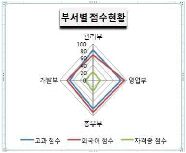
- 데이터 계열이 중심점에서 외곽선으로 나오는 축을 갖는다.
- 여러 데이터 계열의 집계 값을 비교할 때 사용한다.
- 같은 계열에 있는 모든 값들이 선으로 연결되며, 각 계열마다 축을 갖는다.
- 여러 데이터 계열에 있는 숫자 값 사이의 관계를 보여주거나 두 개의 숫자 그룹을 xy 좌표로 이루어진 하나의 계열로 표시한다.
(정답률: 64%)
32. 새 워크시트에서 [A1] 셀에 셀 포인터를 두고, [개발 도구] 탭의 [상대 참조로 기록]을 선택한 후 [매크로 기록]을 클릭하여 [그림1]과 같이 데이터를 입력하는 ‘ 매크로1’을 작성하였다. 다음 중 [그림2]와 같이 [C3] 셀에 셀 포인터를 두고 ‘ 매크로1’을 실행한 경우 ‘성적 현황’이 입력되는 셀의 위치는?
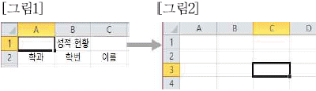
- [B1]
- [C3]
- [C4]
- [D3]
(정답률: 76%)
33. 아래 워크시트에서 [A2:B8] 영역을 참조하여 [E3:E7] 영역에 학점별 학생수를 표시하고자 한다. 다음 중 [E3] 셀에 수식을 입력한 후 채우기 핸들을 이용하여 [E7] 셀까지 계산하려고 할 때 [E3] 셀에 입력해야 할 수식으로 옳은 것은?
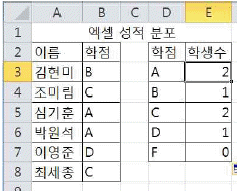
- =COUNTIF(B3:B8, D3)
- =COUNTIF($B$3:$B$8, D3)
- =SUMIF(B3:B8, D3)
- =SUMIF($B$3:$B$8, D3)
(정답률: 67%)
34. 다음 중 [인쇄 미리 보기] 상태에서의 [페이지 설정] 대화 상자에 대한 설명으로 옳은 것은?(본 문제는 오피스 2007 기준 문제입니다. 2010관련은 해설을 참고하세요.)
- 눈금선이나 행/열 머리글의 인쇄 여부를 설정할 수 없다.
- 셀에 설정된 메모를 시트에 표시된 대로 인쇄하거나 시트 끝에 인쇄할 수 있도록 설정할 수 있다.
- 인쇄 배율을 수동으로 설정할 수 있고, 배율은 워크시트 표준 크기의 10%에서 200%까지 가능하다.
- [페이지] 탭에서 [배율]을 ‘자동 맞춤’으로 선택하고 ‘용지 너비’와 ‘용지 높이’를 1로 지정하는 경우 여러 페이지가 한 페이지에 출력되도록 확대/축소 배율이 자동으로 조정된다.
(정답률: 52%)
35. 다음 중 각 워크시트에서 채우기 핸들을 [A3] 셀로 드래그 한 경우 [A3] 셀에 입력되는 값으로 옳지 않은 것은?
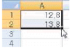
→ 14.8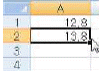
→ 13.8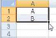
→ C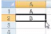
→ B
(정답률: 62%)
36. 다음 중 엑셀의 화면 구성에 대한 설명으로 옳지 않은 것은?
- 화면 상단의 ‘제목 표시줄’은 현재의 작업 상태나 선택한 명령에 대한 기본적인 정보가 표시되는 곳이다.
- ‘리본 메뉴’는 엑셀의 다양한 명령들을 용도에 맞게 탭과 그룹으로 분류하여 아이콘으로 표시되는 곳이다.
- 자주 사용하는 도구들을 모아 두는 곳이 ‘빠른 실행 도구 모음’이며, 원하는 도구를 추가하거나 제거할 수 있다.
- ‘이름 상자’는 현재 작업 중인 셀의 이름이나 주소를 표시하는 부분으로 차트 항목이나 그리기 개체를 선택하면 개체의 이름이 표시된다.
(정답률: 40%)
37. 다음 중 판매관리표에서 수식으로 작성된 판매액의 총합계가 원하는 값이 되기 위한 판매수량을 예측하는데 가장 적절한 데이터 분석 도구는? (단, 판매액의 총합계를 구하는 수식은 판매수량을 참조하여 계산된다.)
- 시나리오 관리자
- 데이터 표
- 피벗 테이블
- 목표값 찾기
(정답률: 60%)
38. 아래 워크시트에서 [A2:B6] 영역을 선택한 후 그림과 같이 중복된 항목을 제거하였다. 다음 중 유지되는 행의 개수로 옳은 것은?
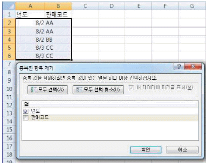
- 1
- 2
- 3
- 4
(정답률: 56%)
39. 다음 중 아래의 워크시트를 참조하여 작성한 수식 ‘=VLOOKUP (LARGE(A2:A9,4),A2:F9,5,0)’의 결과로 옳은 것은?
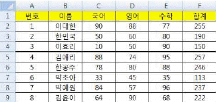
- 90
- 95
- 88
- 74
(정답률: 54%)
40. 다음 중 [보기] 탭의 [창]-[틀 고정] 기능에 대한 설명으로 옳지 않은 것은?
- 워크시트를 스크롤 할 때 특정 행이나 열이 한 자리에 계속 표시되도록 선택할 수 있는 기능이다.
- 첫 행과 첫 열을 고정하여 표시되도록 한 번에 설정할 수 있다.
- 틀 고정 선의 아무 곳이나 더블 클릭하여 틀 고정을 취소할 수 있다.
- 화면에 표시되는 틀 고정 형태는 인쇄 시 적용되지 않는다.
(정답률: 54%)